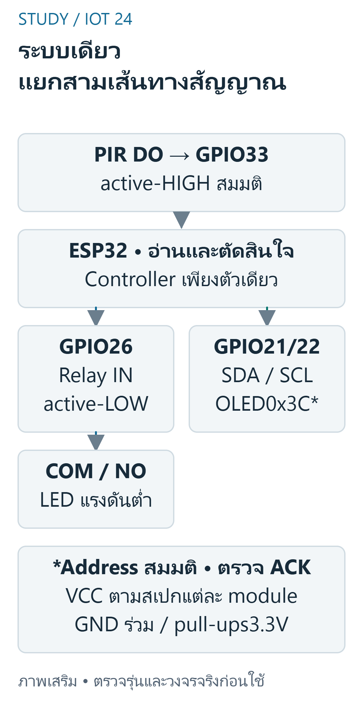
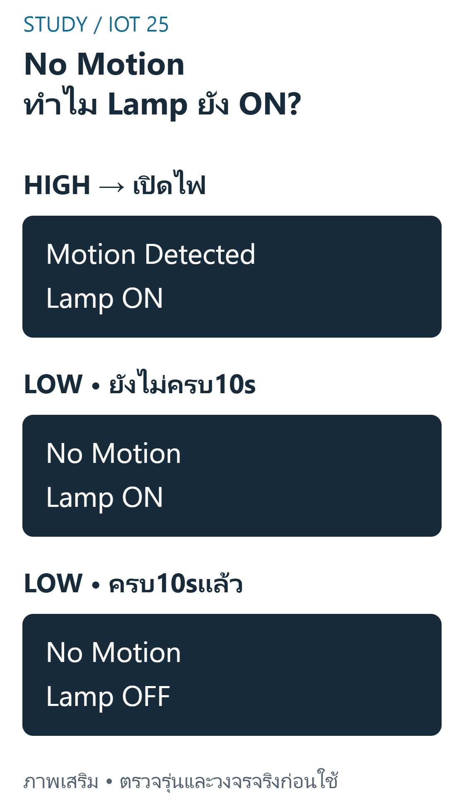

FINAL 09 — OLED และระบบ IoT แบบรวม
เป้าหมายการเรียนรู้
- อธิบายสมมติฐาน OLED และวิธีตรวจ communication
- trace ลำดับ clear / cursor / print / display และตรวจข้อความพอดีจอ
- ออกแบบ outputtable แยกสาม combination ปกติและ HIGH / OFF ที่ผิด policy หลังประมวลผล
- สร้างตาราง now,input,lastSeen,lamp,relaylevel และข้อความ
- ออกแบบ testreport ที่แยก compile / simulation / actualhardware
ขอบเขต หลักฐาน และความปลอดภัย
วิชา 89022567 เลือกศึกษา Week 9–12 โดยยังไม่ยืนยันว่าเป็นขอบเขตสอบ Final ทางการทั้งหมด หลักฐานต้นฉบับ: W12 functions/deliverables; S12 pp.20–27. เลขหน้า PDF หมายถึงหน้าจริงของไฟล์ (physical page); เอกสาร Word อ้างหัวข้องานและหน้าแปลงส่วนตัวตาม บัญชีแหล่งที่มา. ไม่เผยแพร่ต้นฉบับหรือข้อมูลส่วนตัวของผู้เรียน
ตัวอย่างและเฉลยต่อไปนี้จัดทำเสริม ไม่ใช่เฉลยทางการ ใช้บอร์ด classic ESP32-WROOM กับ Arduino-ESP32 core 3.3.11 เป็นเป้าหมาย ตัวเลขขา ระดับสัญญาณ (polarity) เกณฑ์ช่วง (threshold) และที่อยู่จอ OLED เป็นสมมติฐานที่ประกาศ ห้ามเหมารวมกับ ESP32 ทุกรุ่น
ใช้เฉพาะ LED หรือโหลดแรงดันต่ำผ่านโมดูล/วงจรขับที่เข้ากันได้ ห้ามขับขดลวดรีเลย์จาก GPIO โดยตรง และห้ามต่อไฟบ้านบน breadboard ตรวจ Echo 5V กับ GPIO 3.3V วงจรแปลงระดับ กราวด์ และตัวต้านทานก่อนจ่ายไฟ การคอมไพล์และการจำลองไม่พิสูจน์ความถูกต้องของวงจรหรือความแม่นยำเซนเซอร์จริง
OLED, I2C และ Library
S12 แสดง AdafruitSSD1306 กับ Wire และจอ 128x64;ภาพประกอบไม่รับรองรุ่น / address จริง ตัวอย่างนี้เลือก I2CSSD1306,128x64,address0x3C,SDA21 / SCL22 อย่างชัดเจน ต้องตรวจ module จริงและ pullups ไป logic ที่ปลอดภัย compile ใช้ library ที่ติดตั้งเดิม ไม่เพิ่ม runtimeframework ให้เว็บ

อ่านภาพ: ภาพแสดงเส้นทางข้อมูลของESP32ตัวเดียว ไม่ใช่หลายบอร์ด PIRstateกับLampstateแยกกัน จอไม่ตอบให้แจ้งNO OLEDและไม่อ้างว่ามีภาพบนจอ แต่controllerยังใช้policyเดิม
ตารางตรวจสายของภาพนี้ — ไม่ใช่ลำดับขา header
| จาก | ถึง | ชนิด / เงื่อนไข |
|---|---|---|
| PIR DOที่compatible | ESP32 GPIO33 | Input: activeHIGH assumption |
| ESP32 GPIO26 | Compatible relay module IN | Output: activeLOW assumption |
| ESP32 GPIO21 / GPIO22 | OLED SDA / SCL | I2C: pullupscompatible3.3V |
| OLED address | 0x3Cสมมติ ตรวจACKก่อนใช้ | Not a physical measurement |
| PIR / relay / OLED VCC | แหล่งไฟตามสเปกแต่ละmodule | Power: verify actual module |
| ESP32 / PIR / module / OLED | GNDร่วมในตัวอย่างnonisolated | Ground |
| Relay COM / NO | วงจรLEDแรงดันต่ำแยกจากcoil | Load: use protected driver/module |
ข้อควรระวัง: begin สำเร็จไม่ใช่การรับรองทุก pixel หรือ calibration ของ sensor
ตัวอย่างการให้เหตุผลที่จัดทำเสริม:
ตัวอย่างนี้กำหนด OLED แบบใดอย่างชัดเจน?
แนวคำตอบ: I2C SSD1306 128x64 addressสมมติ0x3C — เป็น targetassumption ที่ต้องตรวจ module จริง
Framebuffer, Cursor และการแสดงผล
AdafruitSSD1306 วาดลง buffer ก่อน display.display ส่งไปจอ clearDisplay ล้าง buffer ไม่เท่ากับกดปิดไฟเลี้ยง setCursor(x,y)ใช้พิกัดที่เลือก ต้องให้ข้อความอยู่ภายใน 128x64 ตั้ง textsize1 เพื่อให้ Motion Detected กับ LampON / OFF อ่านได้และอัปเดตเฉพาะเมื่อ state เปลี่ยน
ข้อควรระวัง: clearDisplay โดยไม่ flush ไม่ได้รับรองจอจริงเปลี่ยนแล้ว
ตัวอย่างการให้เหตุผลที่จัดทำเสริม:
จอ monochrome128x64 ใช้ 1bit / pixel ไม่คิด metadata buffer กี่ bytes?
แนวคำตอบ: 1024 — 8192bits / 8=1024bytes
แยก Observed Motion กับ Lamp
จอแสดง Motion Detected / No Motion จาก input และ LampON / OFF จาก statecontroller ไม่สรุปจำนวนคนหรือ presence ถ้า motionLOW แต่ยังไม่ครบ timeout ให้ No Motion / LampON ซึ่งเป็น state ที่ถูกต้อง นโยบายกรณี display ไม่ตอบในตัวอย่างยังควบคุม lowvoltageload และแจ้ง Serial ไม่แสร้งว่าจอทำงานแล้ว

อ่านภาพ: PIRLOWไม่ได้ปิดLampทันที เพราะยังมีholdwindowจากHIGHล่าสุด ภาพจึงแสดงNo Motionพร้อมLamp ONได้อย่างถูกต้อง;ข้อความจอเป็นอังกฤษตามrequirementและมีคำอธิบายไทย
ข้อควรระวัง: อย่าให้เงื่อนไข display ทำให้ timer หยุดอ่าน motion
ตัวอย่างการให้เหตุผลที่จัดทำเสริม:
หลัง nextState ประมวลผลตาม policy ปกติ combination ใดไม่สอดคล้องเมื่อ PIRHIGH ถูกยอมรับ?
แนวคำตอบ: Motion Detected / Lamp OFF — motionbranch กำหนด ON ก่อน update จอ;ถ้า HIGH / OFF ควรตรวจ mapping หรือ state ผิด ไม่สรุปว่าเป็นปกติ
Trace ระบบและ Retrigger
ใช้ nextState เหมือนบท Relay แล้วสร้าง goldentrace แยกจาก measurement เช่น HIGH ที่ 1000 และ 9000ms ทำให้ 11000ms ยัง ON และ 19000msOFF เมื่อ LOW ต้องตรวจ exactboundary,wrap,startup และ reopenfirmware ต่างจาก savedreadingstate ของเว็บ
ข้อควรระวัง: frame ที่เห็นบนจอไม่ใช่ proof ของ physicalmovementtime
ตัวอย่างการให้เหตุผลที่จัดทำเสริม:
HIGH ที่ 1000 และ 9000ms ตอน 11000 elapsed จาก lastHIGH เท่าใด ms?
แนวคำตอบ: 2000 — timer ถูก retrigger เป็น 9000
Fault Handling และขอบเขต Compile
ตรวจ I2CACK แล้วเช็ค allocation / librarybegin ก่อนวาด หากไม่พร้อมให้ serialdiagnostic และไม่เรียก displaymethods ใน loop branch นั้น การสื่อสาร I2C เองอาจ block ตาม timeout จึงไม่รับรอง hardrealtime คอมไพล์ทุก sketch จริงด้วย target / core ที่บันทึกแต่ไม่มี boardupload หรือ hardwaretest
ข้อควรระวัง: แก้ address จากรูปเฉยๆไม่ใช่การยืนยันอุปกรณ์จริง
ตัวอย่างการให้เหตุผลที่จัดทำเสริม:
Wire ไม่มี ACK ควรทำอะไรตามตัวอย่าง?
แนวคำตอบ: รายงานNO OLEDและไม่เรียกdisplaydrawingโดยแสร้งสำเร็จ — ตรวจ screenReady และแยก diagnostic
ตารางเวลาอิสระที่ใช้ตรวจ
สมมติobservedPIRactiveHIGHและrelayactiveLOW;แถวLOWใช้เวลาที่สังเกตไม่ใช่ยืนยันเวลาคนหยุดเคลื่อนจริง
| now(ms) | Motion | lastSeen(ms)หลังประมวลผล | Lamp | INrelay |
|---|---|---|---|---|
| 0 | LOW | 0 | OFF | HIGH |
| 1000 | HIGH | 1000 | ON | LOW |
| 9000 | HIGH | 9000 | ON | LOW |
| 11000 | LOW | 9000 | ON | LOW |
| 18999 | LOW | 9000 | ON | LOW |
| 19000 | LOW | 9000 | OFF | HIGH |
โปรแกรม C++ ที่เขียนเสริม
สเก็ตช์ C++ นี้เขียนเสริมสำหรับเป้าหมายที่ระบุ คอมเมนต์อธิบาย API และสมมติฐาน มีการตรวจคอมไพล์จริง แต่ไม่มีการอัปโหลดหรือวัดผลฮาร์ดแวร์ ห้ามนำไปต่ออุปกรณ์ที่ยังไม่ทราบสเปกโดยตรง
#include <Arduino.h>#include <Wire.h>#include <Adafruit_GFX.h>#include <Adafruit_SSD1306.h>constexpr uint8_t PIR_PIN=33, RELAY_PIN=26;// สมมติclassicESP32,relayinputcompatible3.3V/activeLOW,โหลดLEDlowvoltagestruct LampState { bool on; uint32_t seen; };constexpr LampState nextState(LampState s, uint32_t now, bool motion) { return motion ? LampState{true,now} : (s.on && uint32_t(now-s.seen)>=10000U ? LampState{false,s.seen} : s);}Adafruit_SSD1306 display(128,64,&Wire,-1); // targetOLEDที่เลือก ไม่ใช่ทุกจอLampState lamp{false,0};bool screenReady=false, firstFrame=true, lastMotion=false, lastLamp=false;void setup() { Serial.begin(115200); pinMode(PIR_PIN,INPUT); pinMode(RELAY_PIN,OUTPUT); digitalWrite(RELAY_PIN,HIGH); // OFF ไม่รับรองช่วงbootก่อนsetup Wire.begin(21,22); Wire.beginTransmission(0x3C); const bool ack=Wire.endTransmission()==0; screenReady=ack && display.begin(SSD1306_SWITCHCAPVCC,0x3C); if (!screenReady) Serial.println("NO OLED: control remains active");}void loop() { const bool motion=digitalRead(PIR_PIN)==HIGH; lamp=nextState(lamp,millis(),motion); digitalWrite(RELAY_PIN,lamp.on?LOW:HIGH); if (firstFrame || motion!=lastMotion || lamp.on!=lastLamp) { Serial.println(motion?"Motion Detected":"No Motion"); Serial.println(lamp.on?"Lamp ON":"Lamp OFF"); if (screenReady) { display.clearDisplay(); display.setTextSize(1); display.setTextColor(SSD1306_WHITE); display.setCursor(0,0); display.println(motion?"Motion Detected":"No Motion"); display.setCursor(0,16); display.println(lamp.on?"Lamp ON":"Lamp OFF"); display.display(); // I2Cอาจblockตามtimeout ไม่ใช่hardrealtime } firstFrame=false; lastMotion=motion; lastLamp=lamp.on; }}อ่าน Expected Behavior และกรณีขอบ
จอพร้อมจะแยก Motion Detected/No Motion จาก Lamp ON/OFF;LOW11000หลังHIGH9000แสดงNo Motion/Lamp ON;LOW19000แสดงNo Motion/Lamp OFF;ไม่มีACKให้Serialแจ้งและไม่เรียกวาดจอ
- begin สำเร็จไม่ใช่การรับรองทุก pixel หรือ calibration ของ sensor
- clearDisplay โดยไม่ flush ไม่ได้รับรองจอจริงเปลี่ยนแล้ว
- อย่าให้เงื่อนไข display ทำให้ timer หยุดอ่าน motion
- frame ที่เห็นบนจอไม่ใช่ proof ของ physicalmovementtime
- แก้ address จากรูปเฉยๆไม่ใช่การยืนยันอุปกรณ์จริง
ฝึกอธิบายพร้อมแนวประเมิน
โจทย์เหล่านี้จัดทำเสริมเพื่อทบทวน ไม่ใช่ข้อสอบมหาวิทยาลัยที่ยืนยันแล้ว โหมดฝึกและคลังข้อสอบด้านล่างแสดงคำอธิบายหลังส่งคำตอบตามระบบเดิม เมื่อปิด JavaScript ยังอ่านเฉลยในส่วนพับได้ คำอธิบายและโค้ดอิสระใช้เกณฑ์ประเมินตนเอง (rubric) ไม่ตรวจคะแนนอัตโนมัติ
1. OLED, I2C และ Library
อธิบายสมมติฐาน OLED และวิธีตรวจ communication
แนวคำตอบ: ตรวจรุ่น bus / address / power / pins / ACK และห้ามเหมาว่าทุก OLED เป็น I2C0x3C
2. Framebuffer, Cursor และการแสดงผล
trace ลำดับ clear / cursor / print / display และตรวจข้อความพอดีจอ
แนวคำตอบ: แยก buffer กับ physicaldisplay และเลือกขนาด font / pixels ตาม library
3. แยก Observed Motion กับ Lamp
ออกแบบ outputtable แยกสาม combination ปกติและ HIGH / OFF ที่ผิด policy หลังประมวลผล
แนวคำตอบ: ระบุสิ่งที่ policy อนุญาตและแยก sensorfault / displayfault อย่างซื่อสัตย์
4. Trace ระบบและ Retrigger
สร้างตาราง now,input,lastSeen,lamp,relaylevel และข้อความ
แนวคำตอบ: คำนวณ elapsed จาก lastHIGHobservation และทดสอบเหตุการณ์พร้อม deadline
5. Fault Handling และขอบเขต Compile
ออกแบบ testreport ที่แยก compile / simulation / actualhardware
แนวคำตอบ: เก็บ input / expected / assertions และระบุ pin / level / polarity / address ที่ยังต้องวัดจริง
สรุปก่อนสอบ
- OLED, I2C และ Library: begin สำเร็จไม่ใช่การรับรองทุก pixel หรือ calibration ของ sensor
- Framebuffer, Cursor และการแสดงผล: clearDisplay โดยไม่ flush ไม่ได้รับรองจอจริงเปลี่ยนแล้ว
- แยก Observed Motion กับ Lamp: อย่าให้เงื่อนไข display ทำให้ timer หยุดอ่าน motion
- Trace ระบบและ Retrigger: frame ที่เห็นบนจอไม่ใช่ proof ของ physicalmovementtime
- Fault Handling และขอบเขต Compile: แก้ address จากรูปเฉยๆไม่ใช่การยืนยันอุปกรณ์จริง
อ้างอิงและข้อจำกัด
- ต้นฉบับส่วนตัว: W12 functions/deliverables; S12 pp.20–27; ไม่แนบสำเนา ไม่อ้างว่ามีsourceอื่นที่ยังไม่เปิด
- Source coverage, Academic verification, Exam verification, QA
- ESP32 datasheet — ตรวจ2026-10-29;ใช้target/core3.3.11สำหรับcompileและอย่าสมมติว่าlatestdocsตรงกับทุกcoreเก่า
- GPIO API — ตรวจ2026-10-29;ใช้target/core3.3.11สำหรับcompileและอย่าสมมติว่าlatestdocsตรงกับทุกcoreเก่า
- I2C API — ตรวจ2026-10-29;ใช้target/core3.3.11สำหรับcompileและอย่าสมมติว่าlatestdocsตรงกับทุกcoreเก่า
- SSD1306 library — ตรวจ2026-10-29;ใช้target/core3.3.11สำหรับcompileและอย่าสมมติว่าlatestdocsตรงกับทุกcoreเก่า
ข้อจำกัดที่ยังไม่ยืนยัน: แรงดัน ระดับกระตุ้น ที่อยู่ และการต่อสายของโมดูลจริง ความแม่นยำ สภาพแวดล้อม และวิดีโอทดลอง การตรวจเว็บ/คอมไพล์/จำลองไม่เท่ากับผ่านการทดสอบฮาร์ดแวร์ และไม่ยืนยันขอบเขตข้อสอบจริง